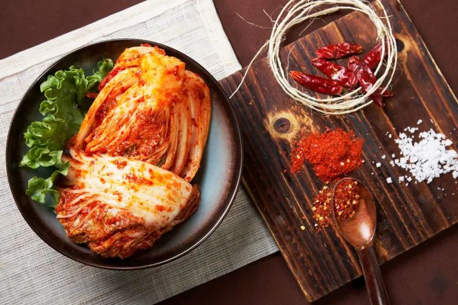
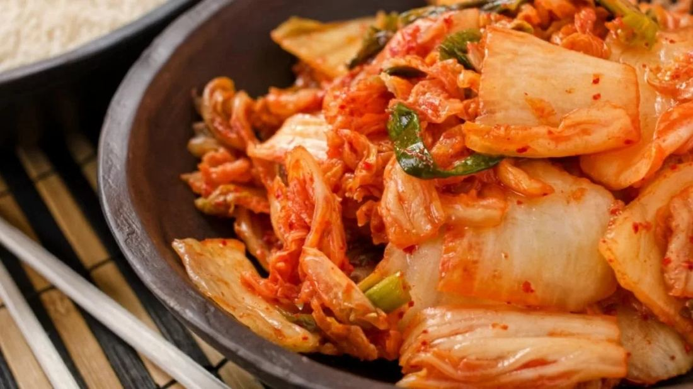
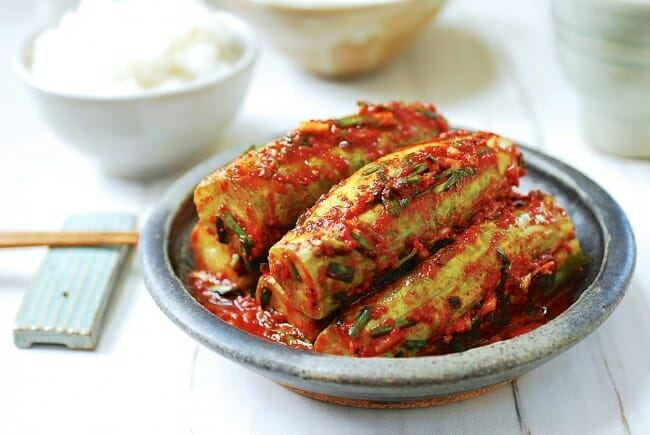
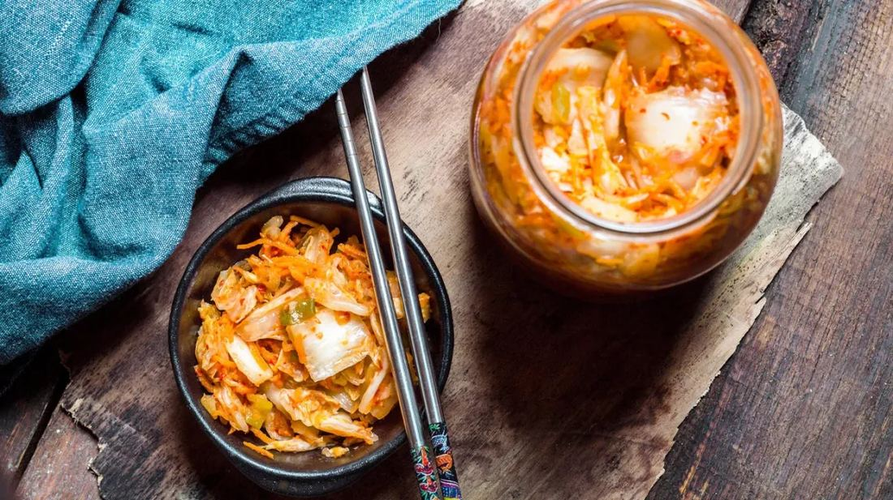
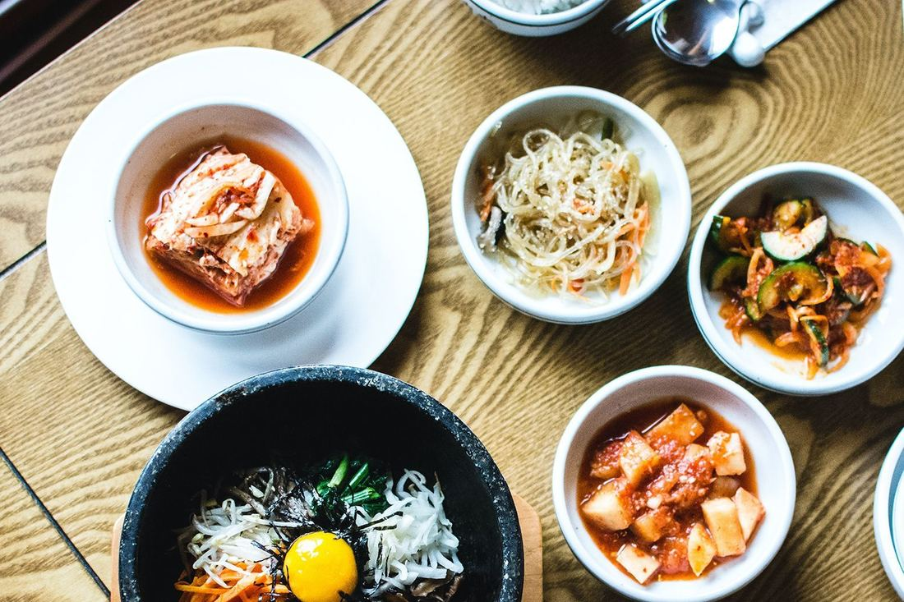

The Ultimate Guide to Kimchi: History, Variants, and Health Benefits
Kimchi is a staple of Korean cuisine - a colorful, fermented vegetable dish that has won over taste buds around the world. This ancient practice turns ordinary vegetables into a complex blend of flavors through natural fermentation, resulting in a dish that is both healthy and incredibly satisfying.
In this guide, you'll learn about:
- The fascinating history of kimchi, from its origins as a method of preserving food to its status as a global superfood
- An in-depth look at the various types of kimchi, including the traditional baechu and refreshing oisobagi
- Scientific research on the impressive health benefits of kimchi
- A detailed tutorial on how to make authentic kimchi at home
- Innovative recipes that highlight kimchi's versatility beyond its usual serving suggestions
For those living in South Florida who are looking for genuine ingredients, Kimchi Mart has a wide range of traditional Korean ingredients available at multiple locations. Their carefully selected inventory includes key items such as Korean red pepper flakes (gochugaru), fresh napa cabbage, and specialized fermentation containers. They also offer a variety of other Korean products, including popular Ramen brands.
What Makes Kimchi Special? At its core, kimchi embodies the perfect combination of artistry and scientific principles. Each batch tells a tale of meticulous preparation, patient fermentation, and age-old knowledge passed down through generations. This living food continues to grow and adapt, embracing contemporary preferences while preserving its cultural importance in Korean homes across the globe.
Whether you're an inquisitive newcomer or an experienced lover of Korean cuisine, this guide will enhance your understanding and appreciation for this extraordinary dish. It will also inspire you to delve into its various aspects and experiment with incorporating it into your meals.
I. The Fascinating History of Kimchi

The story of kimchi dates back over 3,000 years to ancient Korea's Three Kingdoms period. The earliest recorded kimchi appeared as a simple preservation method - vegetables soaked in salt water, creating what we now know as mul kimchi (water kimchi).
Ancient texts reveal that early kimchi-making served as a crucial survival strategy during Korea's harsh winters. The original recipes consisted of:
- Radishes
- Vegetables local to the Korean peninsula
- Salt harvested from sea water
- Natural seasonings like garlic and fish sauce
These early versions bore little resemblance to today's vibrant red kimchi. The transformation began during the Joseon Dynasty (1392-1910) when two significant developments shaped modern kimchi:
- The Introduction of Napa Cabbage Brought from China during the 15th century
- Became the primary vegetable base due to its ideal fermentation properties
- Created the foundation for baechu kimchi
- The Arrival of Red Chili Peppers Portuguese traders introduced chili peppers in the 16th century
- Initially used as medicinal plants
- Gradually incorporated into kimchi recipes by the 18th century
- Added the signature red color and spicy kick
Regional variations emerged across the Korean peninsula, each reflecting local ingredients and climate conditions:
Northern Regions
- Less spicy versions due to shorter growing seasons
- Heavy use of preserved seafood
- Watery consistency to prevent freezing
Southern Regions
- Spicier varieties with abundant red pepper
- Fresh seafood additions
- Longer fermentation periods due to warmer climate
Coastal Areas
- Rich in seafood-based seasonings
- Varied salt concentrations
- Unique jeotgal (fermented seafood) additions
The art of kimchi-making earned recognition from UNESCO in 2013, listed as an Intangible Cultural Heritage of Humanity. This preservation technique evolved into a cultural symbol, with each Korean household maintaining their unique recipe variations passed down through generations.
Traditional kimchi preparation remains alive at Kimchi Mart , where authentic Korean ingredients enable home cooks to recreate these time-honored recipes. The store stocks essential components like Korean red pepper flakes (gochugaru), fermented shrimp paste, and premium sea salt - all crucial elements in crafting authentic kimchi.
In addition to these traditional ingredients, Kimchi Mart also offers a variety of products that can complement your cooking experience. For instance, you can explore their Japanese Buckwheat Noodles Zaru Soba , which are perfect for a light meal or side dish.
Or if you're in the mood for something quick and flavorful, you might want to try their Spicy Shrimp Flavor Cup Noodle Soup . These products not only provide convenience but also bring an authentic taste of Asian cuisine right to your table.
II. Exploring the Diverse Types of Kimchi

Korean cuisine boasts over 200 distinct varieties of kimchi, each with unique ingredients, preparation methods, and flavor profiles. These variations reflect Korea's rich culinary heritage and seasonal availability of ingredients.
Traditional Baechu Kimchi
Baechu kimchi, made with napa cabbage, stands as the most recognized variety. This classic preparation features:
- Whole napa cabbage leaves, carefully salted
- Red pepper flakes (gochugaru)
- Minced garlic and ginger
- Fermented seafood (jeotgal)
- Green onions and Korean radish
A. Kkakdugi (Cubed Radish Kimchi)
Kkakdugi captures attention with its distinctive cube-shaped pieces of Korean radish (mu). This variety offers:
- Texture Profile Crisp, fresh radish cubes
- Maintains crunchiness through fermentation
- Satisfying bite-sized pieces
- Flavor Notes Sharp, peppery radish taste
- Sweet undertones
- Intense garlic presence
- Balanced heat from red pepper
The preparation of Kkakdugi involves cutting radishes into uniform cubes, allowing the seasoning to penetrate evenly. This methodical cutting technique creates the signature texture that distinguishes it from other kimchi varieties.
The radish cubes absorb the rich flavors of the seasoning paste while retaining their structural integrity. As fermentation progresses, Kkakdugi develops a complex flavor profile that combines:
- Natural sweetness from the radish
- Umami from fermented seafood
- Heat from Korean red pepper flakes
- Depth from garlic and ginger
Find premium Korean radishes and authentic kimchi-making ingredients at Kimchi Mart , available at multiple locations across South Florida.
B. Oisobagi (Stuffed Cucumber Kimchi)

Oisobagi brings a refreshing twist to traditional kimchi with its crisp cucumber base. This summer favorite features small Korean cucumbers, carefully scored and stuffed with a vibrant mixture of seasonings.
The preparation process highlights the natural crunch of cucumbers:
- Scoring: Creating shallow diagonal cuts allows the cucumber to hold more flavoring
- Salt-curing: Brief salting process maintains cucumber's firmness
- Stuffing: Packed with minced garlic, green onions, and Korean red pepper flakes
The stuffing mixture creates a perfect balance of:
- Spicy notes from gochugaru
- Umami depth from salted shrimp
- Fresh bursts from green onions
- Savory undertones from minced garlic
This kimchi variant offers a lighter alternative to traditional cabbage-based versions. Its crisp texture and bright flavors make it an ideal banchan (side dish) during warm weather. The fermentation period is shorter than other kimchi types, typically ready to enjoy within 1-2 days.
Available at Kimchi Mart locations throughout South Florida
C. Nabak Kimchi (Water Kimchi)
Nabak Kimchi is a refreshing type of kimchi that stands out from the rest. What makes it unique is its clear and flavorful broth, along with thinly sliced vegetables. Unlike other kimchis that use a paste, this water-based version has a lighter and more delicate taste.
How It's Made
To prepare Nabak Kimchi, the following ingredients are used:
- Thinly sliced radish and napa cabbage
- Korean red pepper flakes (gochugaru)
- Green onions and water dropwort
- Salt-based brine with garlic and ginger
The vegetables are placed in a brine made of salt, water, garlic, and ginger. This brine allows the vegetables to float gracefully, creating an appealing visual presentation with its crystal-clear appearance.
Fermentation Process
One of the key factors that contributes to the flavor of Nabak Kimchi is its fermentation process. Unlike other kimchis that may ferment for weeks or even months, Nabak Kimchi undergoes a shorter fermentation period of only 1-2 days at room temperature. This shorter time frame results in a milder and crisper flavor profile.
When to Enjoy Nabak Kimchi
Nabak Kimchi is often enjoyed during specific occasions or meals:
- Hot summer months when a refreshing dish is desired
- Light meals and appetizers where it can serve as a side dish
- Traditional Korean ceremonies where it may be served as part of the menu
- Cleansing the palate between rich dishes by providing a contrast in flavors
Who Will Like It?
The combination of salty, spicy, and slightly sweet notes in Nabak Kimchi makes it particularly appealing to those who are new to kimchi. Its water-based nature allows the natural flavors of each ingredient to shine through, creating a harmonious blend that refreshes the palate.
If you're looking for something different from the usual fermented foods or want to introduce someone to kimchi without overwhelming their taste buds, give Nabak Kimchi a try!
III. Discovering the Health Benefits of Kimchi

Kimchi is a nutritional powerhouse, packed with essential vitamins and minerals that support optimal health. A single serving of this fermented delicacy delivers a rich blend of:
- Vitamin A - Supports eye health and immune function
- Vitamin C - Boosts collagen production and antioxidant protection
- Vitamin K - Essential for blood clotting and bone health
- Vitamin B6 - Aids in brain development and function
- Iron - Crucial for healthy blood cell production
- Calcium - Maintains strong bones and teeth
The Fermentation Process: Unlocking Probiotic Benefits
The fermentation process transforms kimchi into a probiotic-rich food, creating beneficial bacteria that enhance digestive health. These live cultures, including Lactobacillus and Bifidobacterium, colonize the gut microbiome and:
- Support nutrient absorption
- Strengthen immune system response
- Aid in breaking down complex foods
- Reduce digestive discomfort
- Balance gut flora
Anti-Inflammatory Powerhouse: Ingredients That Fight Inflammation
Research has shown kimchi's powerful anti-inflammatory properties stem from its unique combination of ingredients:
- Cabbage: Rich in glucosinolates that reduce inflammation
- Garlic: Contains allicin, a potent anti-inflammatory compound
- Ginger: Offers natural anti-inflammatory effects
- Red pepper: Provides capsaicin that helps reduce pain and swelling
Antioxidant Protection: Combating Free Radicals
The antioxidants present in kimchi help combat free radicals, reducing oxidative stress in the body. These compounds:
- Protect cells from damage
- Support healthy aging
- Boost cardiovascular health
- Enhance cognitive function
Metabolic Health Benefits: Supporting Weight Management and Heart Health
Studies have linked regular kimchi consumption to improved metabolic health, showing potential benefits for:
- Weight management
- Blood sugar control
- Cholesterol regulation
- Heart health maintenance
Digestive Health Support: Fiber for Regularity
The fiber content in kimchi supports digestive regularity and helps maintain healthy blood sugar levels. Each serving provides both soluble and insoluble fiber, essential for:
- Promoting satiety
- Supporting regular bowel movements
- Feeding beneficial gut bacteria
- Maintaining steady blood glucose levels
Find premium ingredients for your homemade kimchi at Miami Kimchi , ensuring you receive maximum nutritional benefits from authentic components.
IV. Making Your Own Kimchi at Home: A Step-by-Step Guide

Kimchi's versatility extends far beyond its traditional role as a side dish. Let's explore two beloved recipes that transform this fermented favorite into satisfying main courses.
Kimchi Fried Rice (Kimchi Bokkeumbap)
Ingredients:
- 3 cups cooked rice (day-old rice works best)
- 1 cup aged kimchi, chopped
- 1/4 cup kimchi juice
- 2 tablespoons vegetable oil
- 2 cloves garlic, minced
- 1/4 cup diced onion
- 1 egg
- Green onions for garnish
Instructions:
- If you don't have leftover rice, you can use a Rice Cooker/Steamer NHS-10 to cook fresh rice.
- Heat oil in a large skillet over medium-high heat
- Sauté garlic and onions until fragrant
- Add chopped kimchi and stir-fry for 2-3 minutes
- Add rice, breaking up any clumps
- Pour in kimchi juice and stir until rice is evenly coated
- Cook for 5-7 minutes, stirring occasionally
- Top with a fried egg and green onions
Kimchi Stew (Kimchi Jjigae)
Ingredients:
- 2 cups aged kimchi
- 1/2 pound pork belly, sliced
- 1 package firm tofu, cubed
- 4 cups water
- 2 tablespoons gochugaru (Korean red pepper flakes)
- 1 tablespoon soy sauce
- 2 cloves garlic, minced
- 1 green onion, chopped
Instructions:
- Brown pork belly in a pot over medium heat
- Add kimchi and garlic, sauté for 3 minutes
- Pour in water and bring to a boil
- Add gochugaru and soy sauce
- Reduce heat and simmer for 20 minutes
- Add tofu and cook for additional 5 minutes
- Garnish with green onions
Pro Tip: Aged kimchi (at least 2 weeks old) adds deeper flavor to both dishes. Find premium-quality kimchi at Miami Kimchi to ensure authentic taste in your cooking.
These recipes showcase kimchi's ability to add depth and complexity to any dish. The fermented flavors create rich, satisfying meals perfect for any time of day.
Frequently Asked Questions
-
What is kimchi?
Kimchi is a traditional Korean fermented vegetable dish that holds great importance in Korean cuisine and culture. It typically includes ingredients such as napa cabbage, radishes, and various spices, making it a flavorful and nutritious staple.
-
What are the origins of kimchi?
The origins of kimchi trace back to ancient Korea, where early versions were made with salted vegetables and did not include spicy ingredients. The introduction of chili peppers to Korea in the late 16th century transformed kimchi's flavor profile, leading to the diverse varieties we see today.
-
What are some common types of kimchi?
Some common types of kimchi include Baechu Kimchi (made with napa cabbage), Kkakdugi (cubed radish kimchi), Oisobagi (stuffed cucumber kimchi), and Nabak Kimchi (water-based and milder in flavor). Each type has its own unique preparation methods and flavor profiles.
-
What health benefits does kimchi provide?
Kimchi is rich in vitamins A, C, and K, and its fermentation process enhances its probiotic content, which is beneficial for gut health and digestion. Additionally, the nutrients found in kimchi contribute to its anti-inflammatory properties.
-
How can I make my own kimchi at home?
To make your own kimchi at home, you'll need essential ingredients like napa cabbage, garlic, and ginger. The process involves brining the vegetables to draw out moisture, creating a flavorful spice paste for seasoning, and then allowing the mixture to ferment using onggi or jars with lids.
-
What are some delicious ways to enjoy kimchi beyond side dishes?
Kimchi can be enjoyed in various dishes beyond just a side. For example, you can incorporate leftover kimchi into fried rice or use it as an ingredient in traditional spicy stews for added flavor and nutrition.
< Older Post
Newer Post >
Shop these ingredients at Kimchi Mart
Six stores across South Florida — or order online and pick up in an hour.